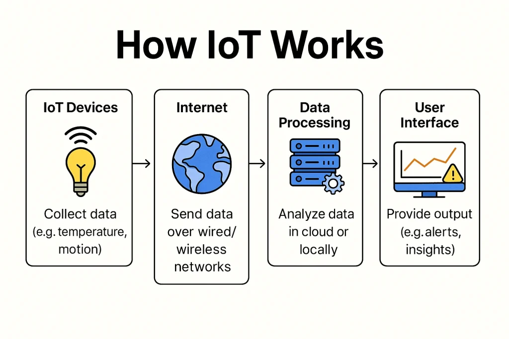
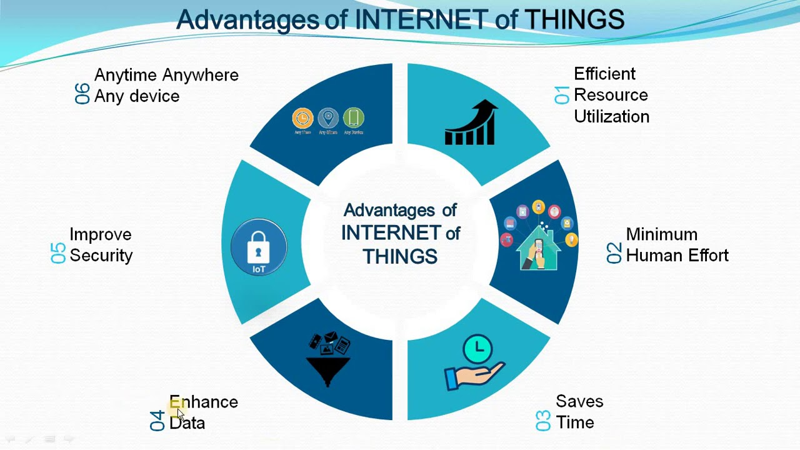
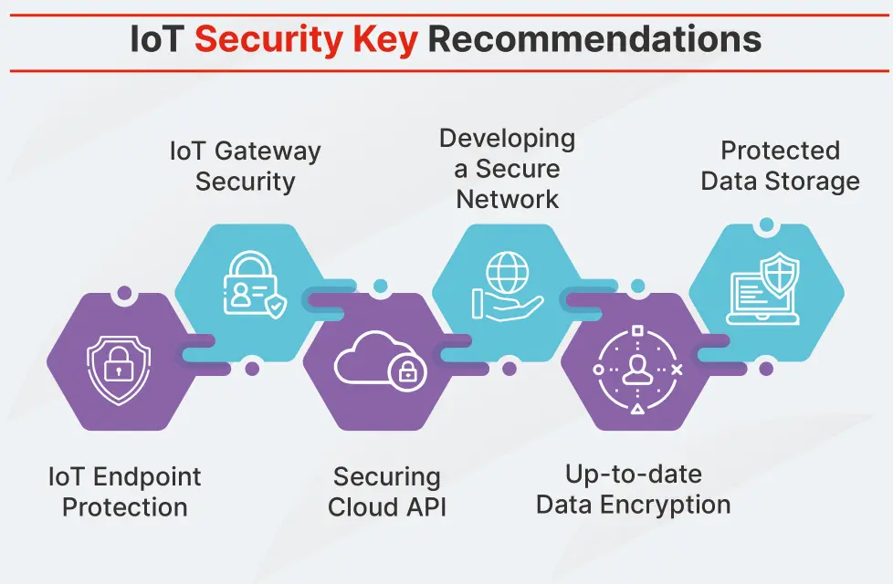

The Internet of Things (IoT) is a network of physical devices connected to the internet that can collect, share and exchange data without humans. These devices range from everyday objects like smart watches and home appliances to industrial machines and sensors.

IoT devices work by collecting data from their environment using sensors like temperature sensors, motion detectors or cameras. Then this data sent over the internet to a server or cloud platform, where software analyzes it. Based on the analysis, the system can take automated actions or send alerts to users. For example, a smart thermostat can detect room temperature and adjust heating automatically, while a wearable fitness tracker monitors your steps and heart rate in real time.
| Category | Example | Function |
|---|---|---|
| Smart Home | Smart lights, Thermostats, Security Cameras | Control devices remotely, automate home tasks |
| Wearables | Fitness trackers, Smart Watches | Monitor health metrics like steps, heart rate |
| Industrial | Sensors on machines, Smart factories | Monitor machinery, prevent failures, optimize production |
| Healthcare | Remote patient monitors, Smart medical devices | Track patient health, send alerts to doctors |
| Agriculture | Soil sensors, Smart irrigation systems | Monitor soil moisture, automate watering |
| Transportation | Connected cars, Fleet tracking devices | Track vehicles, optimize routes, improve safety |

IoT devices often collect sensitive data, so protecting them is important to avoid hacking and data theft. Users should follow good security practices to keep their devices and personal information safe.
1.Use strong, unique passwords for each device
2.Keep devices updated with latest firmware
3.Ensure networks use encryption (WPA2/WPA3)
4.Limit device permissions and access
5.Avoid connecting unknown or insecure devices
6.Be aware of what data is collected and shared

The Internet of Things (IoT) is important because it connects real world devices to digital systems, helping everyday life become easier and smarter. It can automate tasks, improve safety and reduce waste by using data to make better decisions. IoT is widely used in factories, hospitals and smart cities to help things run smoothly and solve problems faster. Learning about IoT is useful because it is becoming a big part of how technology works today and in the future.
AI and IoT work together to create smart systems that can learn from data and make decisions on their own. While IoT collects data using sensors, AI analyzes this data to find patterns, predict outcomes and take automatic actions.
AI makes IoT devices smarter by helping them understand data, learn from it and make better decisions. Instead of just collecting information, devices can analyze, predict and respond automatically.
AI processes large amounts of data and finds useful patterns.
This helps IoT systems make faster and more accurate decisions.
For example ::
Sensors detect machine shaking → AI predicts future damage → maintenance is done early.
AI uses data to forecast events, helping prevent failures and reduce costs.
For example ::
AI predicts when a device will break so it can be fixed before it stops working.
AI allows IoT devices to act on their own without human help.
For example ::
Smart lights turn on only when needed, saving energy automatically.
AI can detect unusual behavior and respond quickly to threats.
For example ::
A security camera recognizes a stranger and sends instant alerts.
AI learns user preferences and adapts devices to their needs.
For example ::
A smart speaker learns your music taste and gives better suggestions.
AI helps systems work faster, use less energy and reduce waste.
For example ::
Smart factories use AI to speed up production and cut unnecessary costs.
AI + IoT is important because it makes devices smart, efficient and able to act on their own. Together, they help automate tasks, improve safety, save time and reduce costs. AI turns the data collected by IoT devices into useful insights, allowing better decisions and faster responses in homes, healthcare, factories and cities. Learning about AI + IoT is useful because it shows how technology is shaping the future of work, daily life and innovation.